Capture it. Mark it. Send it.
Click lives in your menu bar. One key drops the overlay, and the capture lands in an editor built for arrows, redaction, and getting out of your way.
Free for capture, forever · No account. No cloud. Your captures stay on your Mac.
Capture → Edit → Send. One keystroke to a finished, shareable picture.
One key. Then it's already open.
Press ⌘` from any app. Drag. The capture is on your clipboard, in a floating card, and one click from the editor.
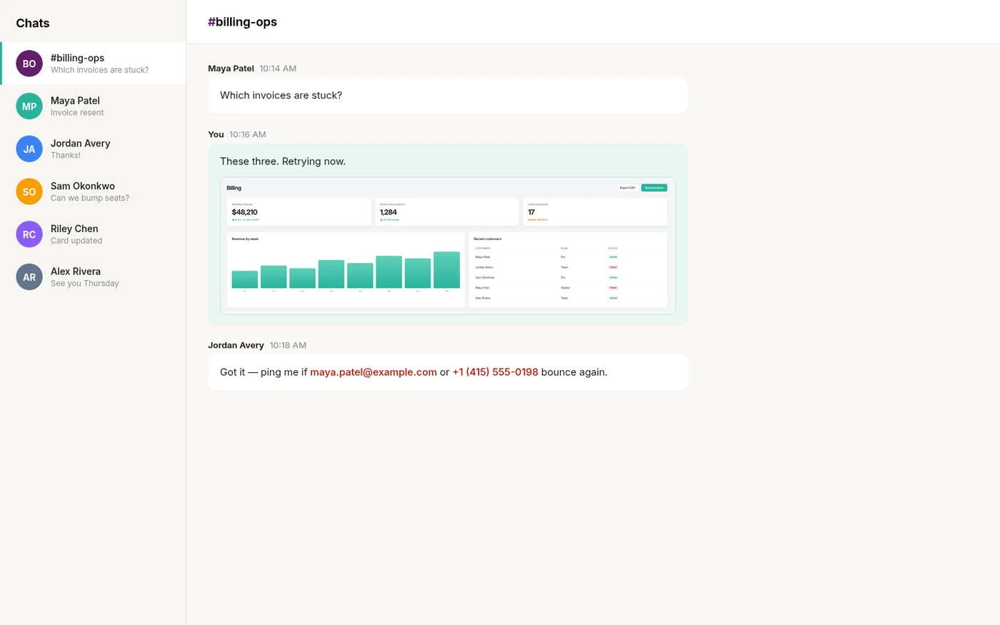
No Dock icon. No window.
Click is a menu-bar agent. Two global shortcuts do the work, ⌘` to capture and ⇧⌘` to record, and you can change both. The menu is there for the day you forget one.
Region, window, or screen — same key.
Space switches modes without leaving the overlay. Hold ⇧ for a square, ⌥ to draw from the centre; the readout shows pixels, and the screen stays put underneath.
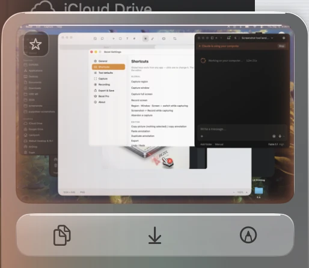
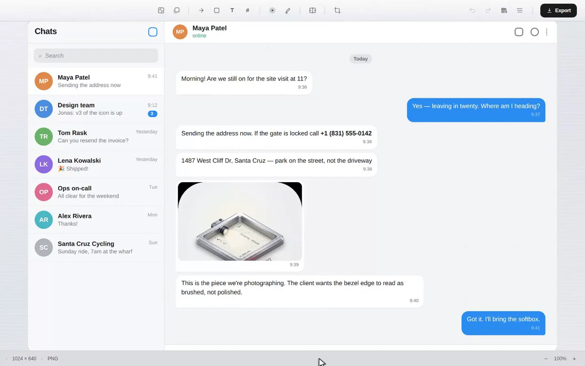
Copied already. Now decide. The card floats for eight seconds — drag it into another app, save it, or press ↩ to open the editor. Ignore it and it leaves on its own.
Annotation that respects the picture.
A chat thread, a design file, a retouch in progress — every mark stays a live object until you export. Move it, restyle it, right-click it and make it the default for that tool.
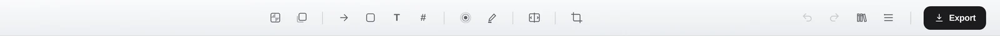
Eight tools. Each one, in the real editor.
Hover a card to watch it drawn.
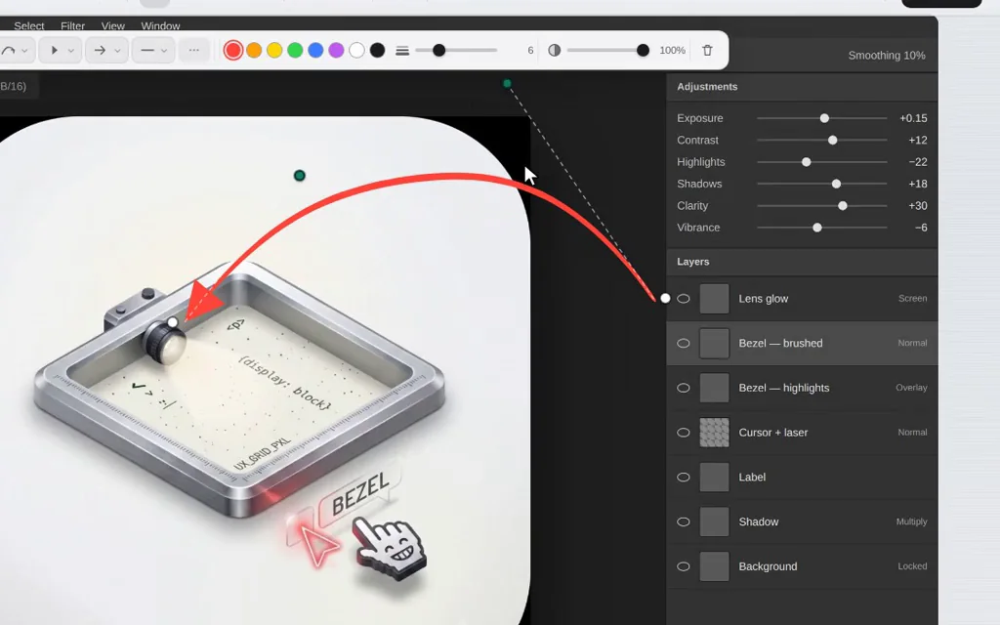
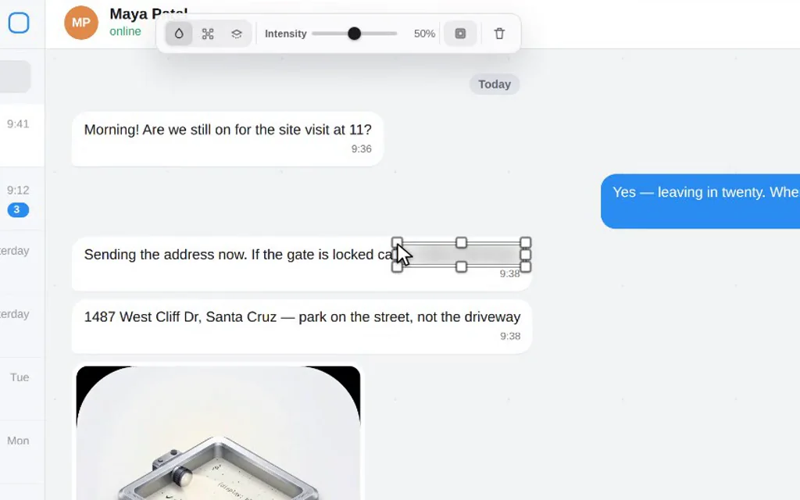
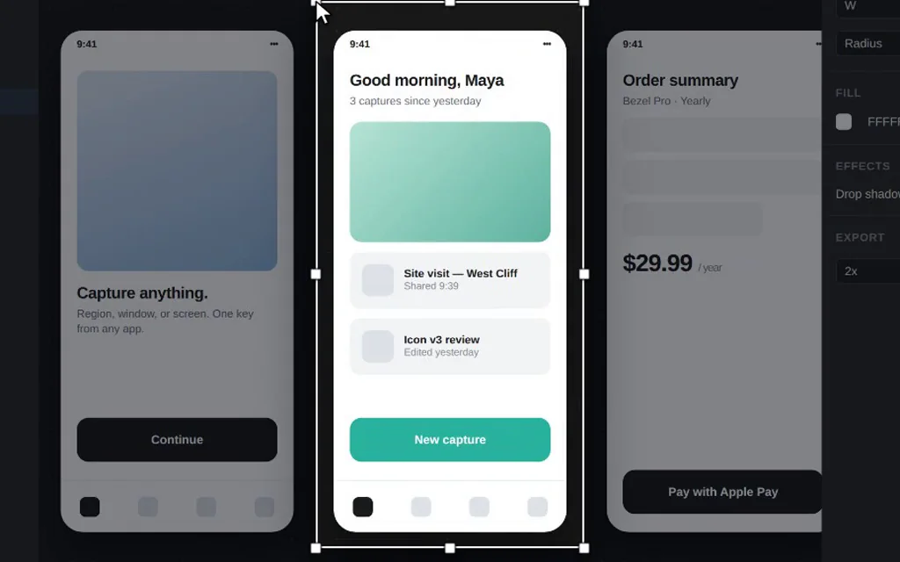
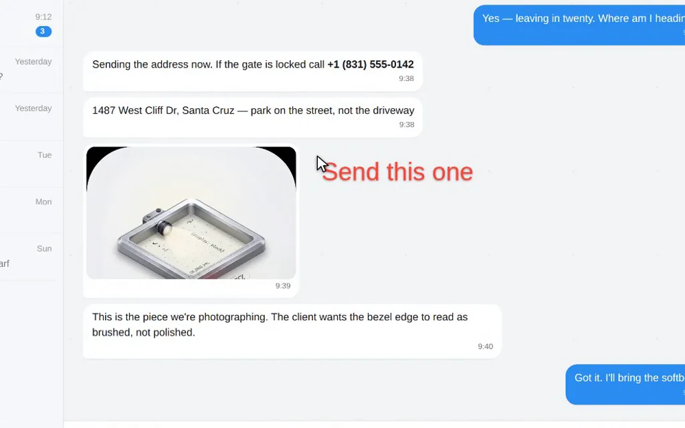
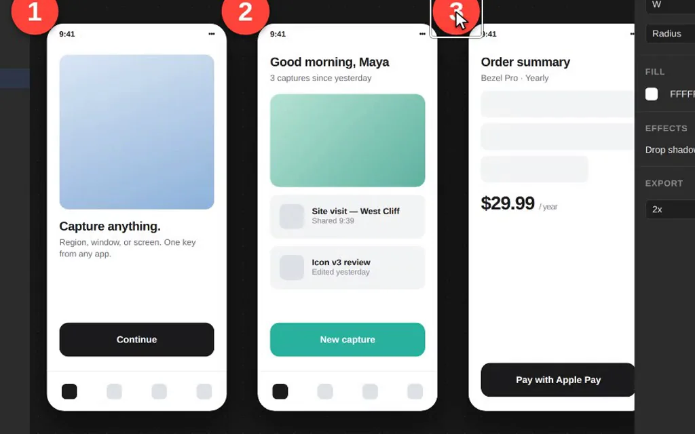
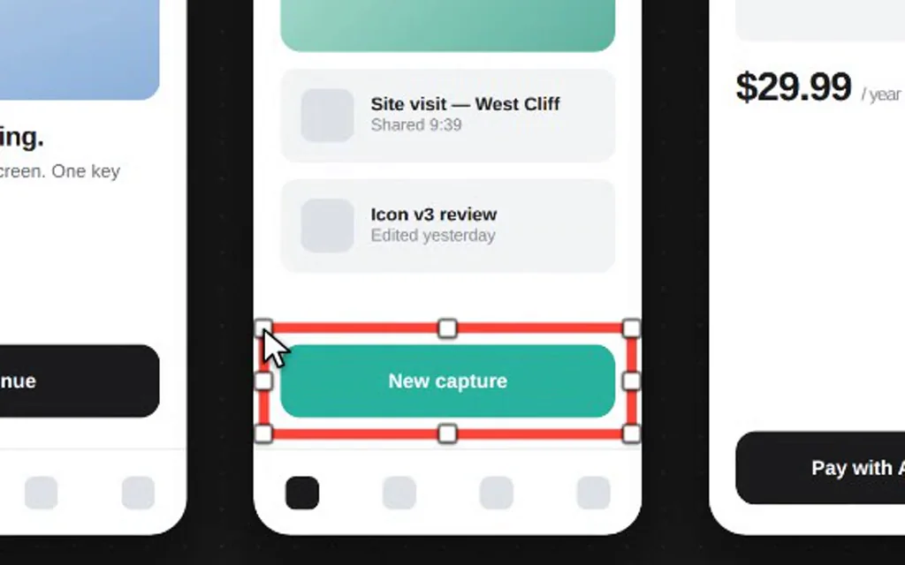
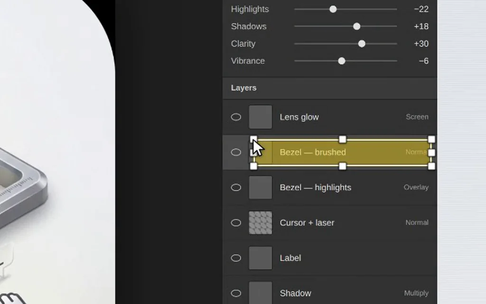
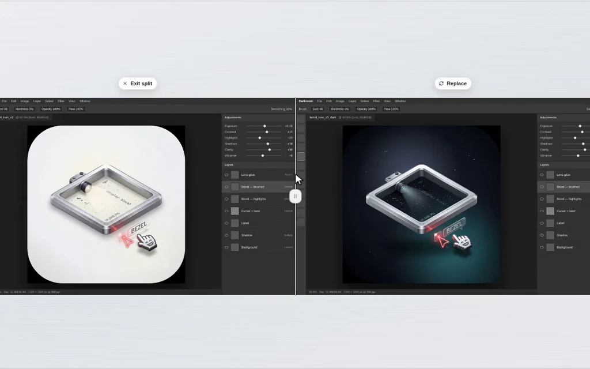
Some things are easier shown.
Same overlay, same key with a shift. Record a region, a window or the whole screen.
- System audio and microphone, each on its own switch
- Camera bubble that stays round and stays out of the way
- A finished clip you can copy, save, or keep in the library
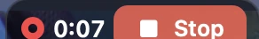
Capture is free. Forever, without an asterisk.
No watermark, no export limit, no expiry. Free is free permanently — the 7-day trial is for Pro, not for capture.
| Capability | Free | Pro |
|---|---|---|
| Capture | ||
| Region, window and full-screen capture Crosshair, live pixel readout, ⇧ square, ⌥ from centre | ||
| Copy to clipboard · Quick Access card | ||
| Save as PNG | ||
| Edit | ||
| Annotation editor Arrows, shapes, text, highlight, spotlight, crop | ||
| Blur & redaction · Numbered steps | ||
| Compare & split | ||
| Record | ||
| Screen recording · Camera bubble · Mic & system audio | ||
| Keep | ||
| Capture library Recents, folders, history | ||
| HEIC & PDF export · 2× Retina export | ||
Start free. Upgrade if it earns it.
Click is sold only on the Mac App Store. Pro is bought inside the app and follows your Apple Account to every Mac you use.
- 7 days free, then $4.99
- Annotation, crop and redaction
- Recording, camera bubble, mic & system audio
- Compare, Library, HEIC/PDF and 2× export
- Cancel any time
Free for 7 days, then renews monthly until cancelled.
- 7 days free, then $47.99
- Everything in Pro Monthly
- $4.00 a month, billed yearly
- All updates while subscribed
- Cancel any time
Free for 7 days, then renews yearly until cancelled.
- Everything in Pro, permanently
- No renewal, no expiry
- All future updates
- Restores on every Mac with your Apple Account
- Refunds handled by Apple
One payment, no trial. Yours to keep.
The short answers.
What is the best screenshot tool for Mac?
Click is a fast, native macOS screenshot tool that captures a region, window or full screen, then lets you annotate with arrows, text, shapes, blur and highlights before copying or saving. It also records video with a camera bubble, making it a lightweight alternative to CleanShot X, Shottr, Snagit and Xnapper.
How do I annotate a screenshot on a Mac?
Take a screenshot with Click and open the editor from the Quick Access card. Add arrows, text, rectangles, ellipses, numbered steps, highlights, or a blur to hide sensitive information. Every mark stays editable until you export, then copy to the clipboard or save as PNG, HEIC or PDF.
Can Click record my screen with my webcam?
Yes. Click records a region, a window or the full screen with optional system audio and microphone, plus a draggable camera bubble. Screen recording is a Pro feature.
Does Click upload my screenshots anywhere?
No. Captures are written to the folder you choose and stay on your Mac. Click has no account system and no background uploader. The only thing it ever sends is anonymous usage statistics — which feature was used, never what you captured — and you can switch those off in Settings.
Is there a free trial?
Yes. Monthly and Yearly both start with a 7-day free trial — one per Apple Account, whichever plan you start it on. You get everything — every annotation tool, recording, the library, HEIC and PDF export — for 7 days at no charge. You are not charged when the trial starts, Apple reminds you before it ends, and cancelling takes one click. Capture, and the editor’s background and drop shadow, stay free permanently and need no trial at all.
Can I get a refund?
Click is sold only on the Mac App Store, so refunds are handled by Apple at reportaproblem.apple.com.
Why does Click need Screen Recording permission?
macOS treats every kind of screen capture, including still screenshots, as screen recording. Click asks once, on first capture, with the standard system prompt. Camera and microphone are only requested if you turn them on for a recording.
Take the next screenshot with it.
Free to start. You'll know within a day whether Pro is worth $4.00 a month to you.
macOS 14 or later · Apple silicon & Intel · Mac App Store only